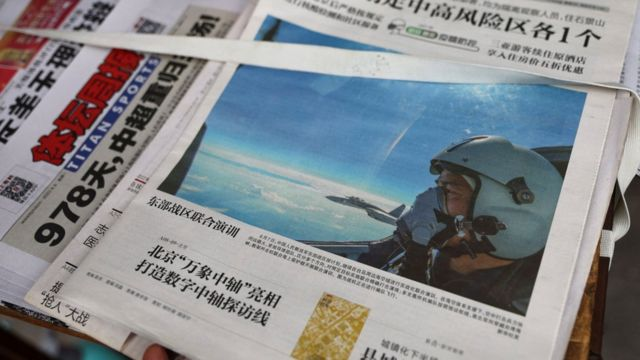

解放军演训暂歇 台海军事紧张“常态化”悬念犹在

佩洛西与台海军演：军事紧张“常态化”悬念犹在，观察人士看低开战可能
2022年8月11日

图像来源， Reuters
图像加注文字，七天以来，中国解放军军机多次飞越敏感的台湾海峡中线。
中国大陆在美国国会众议院议长佩洛西（Nancy Pelosi；裴洛西、波洛西）访问台湾后开展的针对性军事演练告一段落，但中国军方专家宣称演练将“常态化”，成为观察人士最新讨论焦点。
中国解放军东部战区8月9日宣布延长在台湾本岛周边海域、空域的“实战化联合演训”，中华民国国军同日开展“天雷操演”。解放军10日宣布“成功完成各项任务”，但仍将“持续开展练兵备战，常态组织台海方向战备警巡”。
与此同时，中国国务院台湾事务办公室发表《台湾问题与新时代中国统一事业》白皮书，当中称：“我们比历史上任何时期都更接近、更有信心和能力实现中华民族伟大复兴的目标，也更接近、更有信心和能力实现祖国完全统一的目标。”
接受BBC采访的分析人士倾向认为，北京当前举措旨在制止任何外国高级官员继续造访台湾。在现阶段引发全面军事冲突，并不符合中国大陆利益。
佩洛西8月10日在华盛顿向媒体记者总结是次亚洲之行。她称华盛顿不能让北京将其对台高压手段变成“新常态”。
佩洛西坚持其访问台湾决定并无不妥，并批评中国以其访问为借口，策动这次军事演练。

图像来源， EPA
图像加注文字，佩洛西批评中国以她访问台湾为借口开展封锁台湾的军事演练。
中国对台军演是否常态化？
佩洛西8月2日晚抵达台北访问，翌日傍晚离开，中国解放军继而在 4日至7日 围绕台湾举行实弹射击演训。官方中国中央电视台 8月5日晚 问及解放军国防大学教授孟祥青少将，解放军围绕台湾周边的军事演训行动是否会常态化。孟祥青少将回答：“是否常态化取决于‘台独’势力和美方怎么做。”
“我们一方面坚持‘和平统一，一国两制’的大政方针……另一方面，我们过去、现在、将来永远不会承诺放弃使用武力，这是针对‘台独’和境外干涉势力。” “央视军事”微信公众号又转发一篇博客文章 ，宣称此次演训有“不可不知的10个突破”，包括解放军海军实现贴近台湾海岸线、常规导弹首次穿越台湾本岛、“彻底打破‘海峡中线’叙事与幻想”，以及“首次在台岛东部设实战射击靶场，封后路”等。
连日来，台湾国防部多次公布中国大陆军机飞越台湾海峡中线次数，同時明确批评陆方做法“形同海空封锁台湾”，“违反《联合国海洋法公约》等相关规定”。8月9日，外交部长吴钊燮称北京“借机操演其长期以来所准备的侵台行动剧本”。
澳大利亚迪肯大学（Deakin University）战略研究讲师管佳博士（Dr Jade Guan）对BBC中文评论说，“就目前军演进行的情况而言，北京方面进行了一定的克制，避免一些可能会引起台湾或者美国方面军事反应的军事行动”，例如没有刻意选择两岸双方均认为最为敏感的台海中线中段飞越。
管佳认为，解放军演训用于阻吓美国与台湾进一步挑战北京“一个中国”原则的象征意义越来越明显。
澳大利亚国立大学（ANU）亚太学院讲师宋文笛也对BBC中文指出：“军事威胁虽然常态化，但也不是新鲜事。现在是北京将军事存在感转化为释放外交讯息的工具。”
美国大西洋理事会全球中国中心非常驻研究员庄宛桦（Jessica Drun）认为，整体而言，国际社会应从这件事情上认识到，中国在单方面改变现状，利用佩洛西访问台湾作为升级局势的理由，并进一步支撑北京对台湾的主权宣称。
但庄宛桦还对BBC中文说：“话虽如此，我们得确保不会把焦点单纯限制于中国在军事上所做的事情，还须注意到它们在其他领域所采取的措施——例如对台湾施加经济压力，散布不实信息等——以及美国及其盟友为应对中方此等努力所做的事情。”
同样在8月9日，解放军东部战区宣布“继续位台岛周边海空域组织实战化联合演训”。外国驻华记者追问中国外交部发言人汪文斌，此类军演是否将成为新常态。汪文斌并未正面回答，但他称：“中国在自己领土的周边海域开展正常的军事演训活动，公开、透明、专业……既是对挑衅者的警示，也是维护国家主权和领土完整的正当之举。”
到深夜，北京开展新一轮舆论攻势。官方新华社播发外交部副部长马朝旭“答记者问”说：“威胁台海和平稳定的是美国。台湾是中国领土的一部分，根本不存在什么‘海峡中线’。中国军队在中国台湾岛附近海空域开展军事演训活动，旨在维护中国的神圣主权和领土完整。我们的措施公开适度，符合国内法、国际法和国际惯例，无可指摘。”
“美国及其盟友经常到中国周边海域耀武扬威，挑衅滋事。他们每年搞的军演就达上百次。过度反应、升级局势的帽子他们戴最合适。”

10日早上，中国国务院台办与国务院新闻办公室共同发表 《台湾问题与新时代中国统一事业》白皮书 ，是2000年台湾民进党陈水扁总统执政时期以来首次。
白皮书开首便说：“台湾民进党当局加紧进行‘台独’分裂活动，一些外部势力极力搞‘以台制华’，企图阻挡中国实现完全统一和中华民族迈向伟大复兴。”
“我们不承诺放弃使用武力，保留采取一切必要措施的选项，针对的是外部势力干涉和极少数‘台独’分裂分子及其分裂活动，绝非针对台湾同胞，非和平方式将是不得已情况下做出的最后选择。”
管佳认为，白皮书第四部分《在新时代新征程上推进祖国统一》和第五部分《实现祖国和平统一的光明前景》，强调两岸的对话和协商，语气上已较为和缓。

图像来源， Reuters
图像加注文字，8月5日，游客在平潭通过望远镜观看海面，平潭是中国大陆距离台湾最近的一个海岛。
但同样是在这一部分，白皮书重申中国大陆“不承诺放弃使用武力”，不过同时声称这“针对的是外部势力干涉和极少数‘台独’分裂分子及其分裂活动，绝非针对台湾同胞，非和平方式将是不得已情况下做出的最后选择”。
管佳认为，北京继续强调台湾问题纯属中国内部事务，得留下“武力攻台”作为阻吓国际势力，展示其统一决心的手段。
宋文笛则说，将《台湾问题与新时代中国统一事业》白皮书与 2019年 中共中央总书记习近平的《告台湾同胞书》40周年纪念讲话相比，新白皮书“正式点名骂民进党了”，取代了只讲“极少数‘台独’分裂分子”。
“措辞的改变，意味着涉台体系说北京在‘一中’原则的问题上，已将民进党放入‘不可教化’的篮子里了。”
“当然，这也是极限施压的一环。”

图像来源， AFP
10日傍晚， 解放军东部战区发言人施毅陆军大校称 ，部队“成功完成各项任务，有效检验了部队一体化联合作战能力”，但同时称“战区部队将紧盯台海形势变化，持续开展练兵备战，常态组织台海方向战备警巡”。
宋文笛 在Twitter上 评论“常态组织台海方向战备警巡”一说，称这估计是“相对廉价而灵活”的做法。而其用处离不开巩固大陆军方出现在台海周边的“新常态”，且在政治上做到只要台湾“不安分”，中国大陆就会透过升级军事演练级别来表达不爽。
台湾国防部对中国解放军宣布“完成”实弹演练评论说，此次中共挑衅刚好可落实中华民国国军“处处皆战场，时时做训练”的观念。 台湾大陆委员会也回应国台办的白皮书称 ：“民主台湾是区域负责任的一方，中共才是制造区域风险危机的最大问题。”
美国智库的战争推演
经历了一整周的紧张局势，一些媒体与智库已开始将之形容为“第四次台海危机”，美国智库战略与国际研究中心（CSIS）便是其中之一。
8月9日，该中心旗下国际安全计划（CSIS-ISP） 公布最近曾进行至少22轮有关台海战争爆发——或勉强称为国共内战重启——的沙盘推演，结果显示，在假设美军大规模介入，利用派驻日本之兵力协防台湾，而又无人动用核武的情况下，美国与日本虽然能守住台湾，但首先要遭受被中国摧毁多达900架军机和大部分船舰的损失。
中国则预计损失约150艘舰艇。
参与了这次沙盘推演的美国智库“德国马歇尔基金会”（German Marshall Fund）中国事务分析员白若诗（Bryce C. Barros）对BBC指出，推演说明一旦爆发冲突，要让局势降级，将会非常困难。
白若诗将推演比对过去多天中国解放军与中华民国国军之间的对峙指出：“台方对这些军演表现得相当克制。”
“从网上一些疯传的照片所见，国军海军哨岗紧盯着解放军海军哨岗，在这样的处境下，稍有错误升级，就会造成平民百姓伤亡，甚至导致更大型事件。”
迪肯大学的管佳博士透过电邮对BBC中文指出：“乌克兰战争所展示出战争对国家安全与发展的冲击十分明显，而中国对此已有所评估。再者，在中共二十大尚有三个月便要举行之际，维持内部稳定必然是北京的首要任务。”
“自民进党蔡英文担任总统以来，北京所采取的强硬措施，已经导致自己跟台湾疏离。强势军事报复只会让和平统一台湾的可能性更见黯淡。”
但管佳还说：“我想就习近平主席而言，他希望看到两岸对话重启，至少在他任内，显示台海问题没有恶化甚至有一些进展，这在中国内部面对严峻政经挑战的情况下很重要。”
日本网络防御公司非执行董事，台湾国防部前参谋总长李喜明上将指出，他不认为台湾在军事上准备好迎战大陆进犯。
李喜明上将对BBC说：“值得庆幸的是，我也不认为解放军有足够能力策动全面入侵，因此台湾军方仍有一点时间做准备。”

图像来源， EPA
图像加注文字，台湾本身武装力量是否足以抵抗中国大陆来犯备受关注，图中的法国制造幻象2000-5战斗机已有将近30年历史。
在佩洛西访台之前，美国国会议员在过去一年多也曾不止一次组团到访。李喜明上将认为台湾从美国获得了恰当的支持，“但我要强调，我们需要那些实实在在的帮助，包括军事支援，而非像来访或口头上支持这样的象征性援助，我们需要情报提供和诸如非对称武器体系的帮助”。
英国皇家联合三军研究所（RUSI）资深副研究员，前欧盟驻华外交官彭朝思（Charles Parton）也认为海峡两岸均在想方设法避免开战。
彭朝思对BBC说：“从军事上讲，要横渡上百英里算得上波涛汹涌的海峡攻击并拿下一个岛屿极其困难……易守难攻。”
“要是打败仗，对习近平和他的中国梦将是莫大挫败。”
但彭朝思说，更值得注意的是经济方面，包括台湾是全球约65%高端半导体来源地这个事实。
“要是你毁了它，全球经济崩坏，中国经济也会崩坏……许多电子零部件都出口自台湾，运到中国大陆，给装进中国制造的产品里面，再出口到国际市场。要是那全都停摆，中国出现庞大的失业问题。” 中国国家统计局此前公布 ，2022年6月份，16至24岁人口调查失业率高达19.3%。彭朝思对BBC说：“有人失业，而又缺乏社会保障网，这些人怎么办？他们很可能会抗议、暴动。你的抗议对象就只有一个：执政的中国共产党。”

图像来源， Reuters
图像加注文字，彭朝思认为一旦中国攻台失利将波及大陆以至于全球经济。
“常态化”下，台湾民间可以怎么办？
佩洛西访台后，中国大陆除了举行军演外，还颁布一系列经济制裁台湾措施， 包括点名对四家台资企业及其负责人颁布“惩戒”措施 。官方中共《人民日报》 还刊登中国人民大学两岸关系研究中心主任王英津教授文章 ，誓言对被北京定性为“‘台独’顽固分子”人士“采取刑事惩处措施”，“缉拿归案、绳之以法”，“即使有些人暂时无法缉拿归案，也可依法对其进行缺席审判、定罪量刑”。
一些台湾民间和商界人士对大陆的威胁表示习以为常。台湾优格饼干学院品牌经理吴沛淳接受BBC连线采访时说：“对于我们的客户来说，我认为他们也是以平常心待之，因为我们深知要把产品出口到世界，尤其是中国，总得面对许多挑战。我想对于我们来说，这（大陆的制裁）不过是又一次挑战。”
澳大利亚国立大学讲师宋文笛透过网络社交平台对BBC中文指出，既然中国大陆透过台海军事存在常态化来回应佩洛西访台，“台湾的主要回应也会是在外交面，巩固国际友谊连结，透过小多边主义形式发声，深化台海和平稳定与区域稳定之间的连结，以提供诱因令北京对台展示更多战略耐心”。
不过也有政治人物从军事方面考虑。 以台北市长柯文哲为首的台湾民众党8月10日公开建议 ，因应台湾此前改革兵役制度后服役时间缩短，建议借镜美国国民警卫队制度培训民兵，和比照核安全演习，常态化模拟各种可能的攻击和灾害。
管佳对BBC中文指出：“国防方面，台湾政府在强化国防，增加国防开支和购买军备，以此增加解放军攻打台湾的成本；本周台湾计划在台南进行实弹炮兵演习展示其面对大陆军事压力的战斗决心。”
“外交方面，台湾寻求民主国家的支持，一方面展现其良好的国际形象，另一方面最好是取得某种国际上的保卫台湾的承诺，尤其来自美国。但这些措施在短期内是不是符合台湾人民的利益并不好说，因为中国大陆会认为这些都是对一个中国的挑衅行为，进而将军演常态化，如此变成一个‘死循环’。”
“对两岸人民来说，增加文化经济交流、进行贸易是增进理解和互信的有效手段。但在中美关系恶化、极端民族主义盛行的情况下，这些举措的展开需要很大的领导智慧。”
台湾国防部前参谋总长李喜明上将则更关心台湾官民防范网络攻击的程度。他对BBC说，他并不认为上周佩洛西访台期间发生的一些网络攻击——铁路局车站屏幕、国防部网站等遭黑客入侵插播反佩洛西信息或全面瘫痪等——是由任何获得国家支持的组织所策动，且也非关键基础建设遇袭，但是“战时并不一样，我们得做好准备”。
台湾总统蔡英文8月10日 主持执政民进党中央执行委员会会议时说 ：“台湾面临的内外部挑战，从来没有少过，但是，台湾总是关关难过，关关过。”
“我们在这里要说清楚，台湾人民希望的是，我们要和平，我们不挑衅、不升高冲突，但捍卫主权与国家安全，台湾绝对不退缩。”